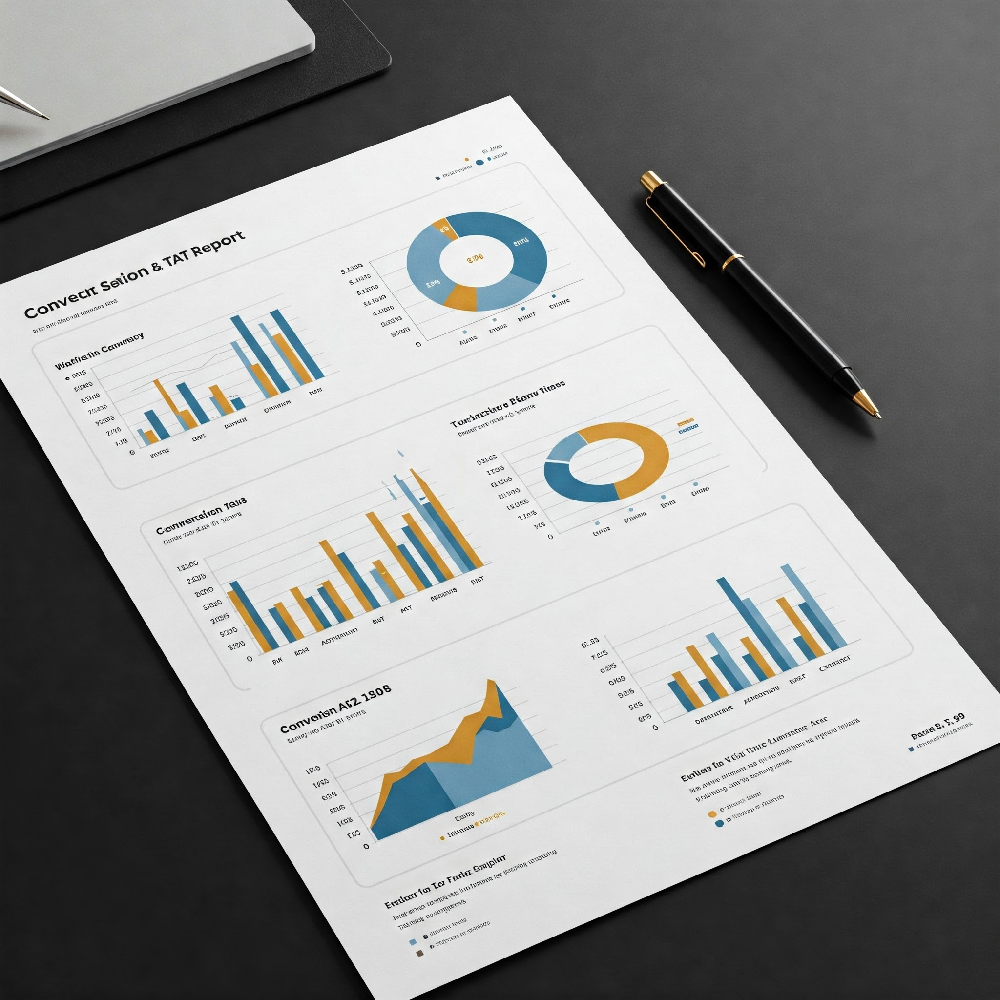

In this project, I conducted an in-depth data analysis of a key insurer's PPMC ie. Pre-Policy Medical Check Up account to investigate a significant decline in business volume. The objective was to identify the underlying causes of reduced conversions and appointment confirmations and to develop a data-backed action plan to improve overall performance. Using raw CSV files extracted from the CRM system containing 185+ columns and lakhs of rows, I focused on key operational metrics such as appointment status, call attempts, call outcomes, DND flags, and application IDs. By cleaning, segmenting, and analyzing the data using Python and Excel, I identified key drop-off points in the appointment funnel. Performed root cause analysis using exploratory data analysis. Identified patterns in call outcomes and appointment failures contributing to low conversion. Highlighted insurer-specific operational bottlenecks and proposed targeted solutions. Designed a data driven action plan to recover lost volume and improve future conversions. Automated portions of the analysis for repeatability and faster reporting.

My objective here is to completely Automate the manual Excel Work to Track the Next Day Medical Appointment and complete it next day in PPMC (Pre-Policy Medical Check-Up) so that we can reduce the 20 Minutes of manual work to 1 Minute on daily basis for 25 Account Managers.
In this project, I analyzed the Work in Progress WIP data of a major insurer account to identify the root causes of increasing pending cases in the Pre-Policy Medical Check-Up (PPMC) process. These pending cases were directly impacting business performance and client satisfaction. The objective was to reduce the backlog, streamline appointment workflows, and ultimately boost PPMC conversions. Using large CSV files exported from the CRM—containing over 185 columns and lakhs of rows. I focused on key operational fields such as appointment status, call status, attempts made, and DND (Do Not Disturb) flags. I developed a Python-based solution to automate the detection of bottlenecks and generate a simplified, actionable tracker for account managers. Conducted exploratory data analysis to surface hidden inefficiencies in the appointment lifecycle. Identified high impact reasons for pending cases, such as insufficient call attempts or repeated DND flags. Created automated summaries and dashboards to track pending case trends and monitor daily progress. Built reusable Python functions for daily report generation, enabling non-technical account managers to handle the task efficiently. Contributed to a measurable reduction in WIP backlog and improved overall completion rates.
In this Project we will effectively diagnose and treat missing data in Python and will perform a range of Data Cleaning Task on AirBNB Data.